Analysis of
multiple implementation options to be considered in the overall solution. In
addition, methodologies for the most appropriate selection are provided.
This section
describes the architecture of different transport technologies to be used on the
transport network. Moreover, it describes implementation alternatives for each
technology and general guidelines to select the most appropriate.
The general
architecture using Fiber Optic as a transport technology is displayed in Figure
12. In this scenario, the enodeB is connected to a router located at the site,
commonly named as Cell Site Gateway (CSG), which provides the transport
services. The CSG is connected through a Fiber Link to the aggregation Node
located in the transport node, which sends the traffic to the Mobile Core.
Alternatively, an L2 switch can be deployed on the cell site location, moving
the CSR location to the aggregation node.
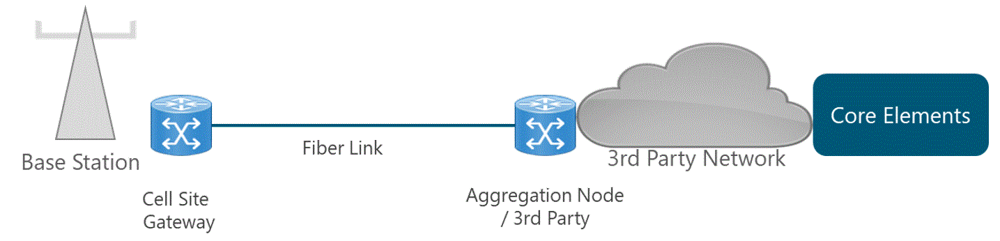
Figure 12. Transport Architecture using
Fiber Optic
For the implementation
of the fiber optic architecture, three scenarios are identified for NaaS
Operators:
- Fiber Construction Implies building the fiber
infrastructure up to the RAN site. Thus, the design of the fiber laying must be
performed.
- Fiber Link Leasing - Fiber links can be leased
to a 3rd party with a presence in the region.
- No Fiber Links Fiber optic may not be feasible
if the cost of fiber infrastructure is out of the budget (e.g., high cost of
fiber deployment in rural areas), and a 3rd party infrastructure cannot be used
(e.g. no 3rd party with coverage in the area). In this case, the technology
should not be considered in the later phases of network design.
In the following
sections, the primary considerations for the two first scenarios are examined,
and engineering guidelines are provided accordingly.
This scenario
considers creating a fully dedicated, private physical network infrastructure
by the NaaS operator. This approach can easily scale to handle whatever
bandwidth requirements arise in the future.
On the other
hand, the construction cost in rural areas is high, which may impact the
overall CapEx project. Additionally, construction time can be lengthy and
requires extensive planning and project management.
The principal
considerations to support the fiber infrastructure design process are described
in the following subsections.
Right of Way Definition
A right of way
provides the right to pass across the lands of another, usually in a strip,
acquired for or devoted to building facilities such as roads, railroads, or
utilities. In this sense, rights of way are closely interrelated with both
civil work for fiber infrastructure and technical engineering for network
planning, operation and maintenance.
For the reasons
stated above, a Right of Way Definition must be done to prioritize the types of
road (e.g. main roads, highways, electrical lines) that may be considered
during later phases in the transport network design. For example, a NaaS
operator can only be granted to construct fiber infrastructure in rural roads,
so other types of roads (e.g. highways) must not be considered during the
design phase.
Fiber
Optic Maximum Allowed Distance
It is the
maximum distance allowed for a new deployment of fiber to be considered as
feasible for implementation. This value must consider the technical conditions
(e.g target availability) as well as commercial considerations (e.g maximum
allowed CapEx for fiber deployment).
Fiber Optic
Maximum Allowed Distance value is important for the overall transport network
design as it directly affects the number of feasible fiber links. The greater
the value, the greater the amount of fiber infrastructure to build, which
increments the cost of deployment.
Fiber
Optic Interfaces
In this
scenario, multiple fiber strands are available as part of the fiber
infrastructure laying, this characteristic allows to determine the fiber optic
interface to be implemented. The fiber optic interfaces are modules used for
the transmission of signals over the fiber optic medium. The complexity and
cost of these modules varies according to the capacity supported (e.g. 1G, 10G,
40G or 100G).
Additionally, a
Capacity Safety Margin must be defined to determine the capacity of exhaustion
in the interface. For instance, a Safety Margin of 20% indicates that the interface
capacity is exhausted when the real utilization hits 80% of the interface
capacity. In this case, an upgrade in the interface must be considered.
Preferred
Type of Fiber Laying
A new fiber
deployment could require buried cables, aerial cables or underwater cables.
Moreover, cable may be in conduit, innerduct or direct buried, aerial cables may
be self-supporting or lashed to a messenger.
In rural areas,
aerial cable is the most common fiber laying deployment due to its low cost and
fast implementation.
Fiber Construction Summary
Table 3 provides to
the NaaS Operator an initial set of recommended values for the Fiber
Construction scenario.
|
Characteristic
|
Engineering
Guideline
|
|
Right
of Way Definition
|
- New deployments must
prioritize the use of main roads (e.g. highways) and consider secondary roads
as subject to permissions grant.
- The use of the electrical grid
must be considered as priority if available.
|
|
Fiber
Optic Maximum Allowed Distance
|
The maximum allowed distance
between eNodeB and transport Node is generally 10km depending on the
availability calculation and commercial agreement. For example, in a rural
environment where a fiber cut occurs each 8 years per km and a MTTR of 1 day,
the maximum allowed distance is 3km to maintain an availability of 99.95%.
|
|
Fiber
Optic Interfaces
|
- 1G interface per Last-mile
Links
- 10G interface per Aggregation Links
*Capacity Safety Margin of 20% of interface capacity
|
|
Preferred
Type of Fiber Laying
|
Prioritize the use of aerial
fiber.
|
Table 3. Engineering Guidelines for Fiber
Construction Scenario
NaaS operators
can rely on an existing fiber deployment by leasing the fiber links to a 3rd
party. This process implies an additional OpEx but avoids the investment in
infrastructure deployment.
It is worth to
say that the operation and maintenance activities of the fiber infrastructure
is the responsibility of the 3rd party, lightening the operational
workload. The monitoring to assure the SLA compliance can be done over the
demarcation node between the NaaS operator and the 3rd party
network. This approach is commonly known as Lit Fiber Leasing.
Another option
for the NaaS operator is to only lease the fiber infrastructure of the 3rd
party and install its own equipment. The approach described is commonly known
as Dark Fiber. In this case, the NaaS operator can upgrade the capacity by
changing the equipment at the ends of the fiber, becoming the link
future-proof. Moreover, the fee cost remains fixed and independent of the
amount of coursed traffic. Due to the nature of this scenario, some of the
considerations of the previous section are applied.
In the following
subsections, the principal considerations when leasing fiber links (Lit Fiber
Leasing) to a 3rd party are described.
Fiber Link
Capacity
In the Fiber
Construction scenario, the capacity of fiber link is not a constraint as
several fiber strands are available, and capacity exhaustion is not likely.
However, the expected transmission rate on a leasing fiber link must be
negotiated within the Service Level Agreements (SLAs).
The capacity of
the fiber link must be appropriately forecasted to avoid surpassing the
contracted limit. If the contracted capacity is exceeded, the traffic may be
discarded, causing service degradation. Additionally, a Capacity Safety Margin
must be considered in the link capacity.
Furthermore, in
subsequent design phases, this value determines the maximum number of
aggregated sites within a single transport link depending on the traffic
generated by RAN equipment.
Fiber Link
Availability
The availability
in a leased fiber link is another parameter to be negotiated within the Service
Level Agreements (SLAs). This value varies according to the network segment.
Fiber Link Leasing Summary
The typical values
recommended for the NaaS operator regarding the Fiber Link Leasing scenario are
summarized in Table 4.
|
Characteristic
|
Engineering
Guideline
|
|
Fiber
Link Capacity
|
- 100Mbps - 1Gbps per Last-mile
Links
- 1Gbps - 10Gbps per Aggregation Links
*Capacity Safety Margin of 20% of link capacity
|
|
Fiber
Link Availability
|
- 99,9% per Last-mile Links
- 99,99% per Aggregation Links
|
Table 4. Engineering Guidelines for Fiber
Link Leasing Scenario
The general
architecture using Microwave as a transport technology is displayed in Figure 13.
In this scenario, the eNodeB is connected to the radio equipment located in the
site, which is connected through a MW Link to the radio equipment located in
the transport node. Then, a connection to the aggregation node is reached which
sends the traffic to the Core elements.
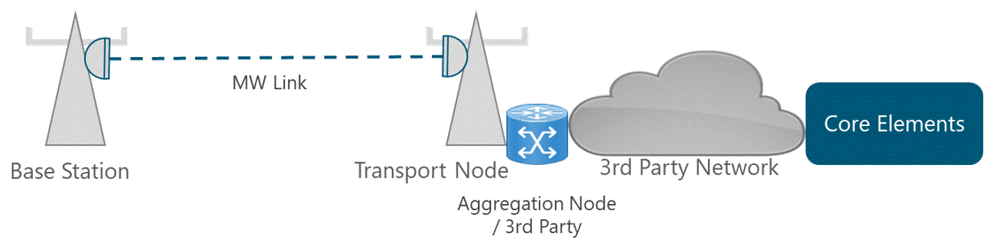
Figure 13. Transport Architecture using
Microwave
Microwave links
may not be feasible due to unfavorable terrain conditions (e.g. mountainous
terrain) or not suitable civil infrastructure (e.g. low rise towers). In this
case, the technology should not be considered in the later phases of network
design.
If the NaaS
Operator selects microwave links as a suitable option, they should take the
following considerations to support the microwave design process.
Frequency
Band Selection
When selecting
the operational frequency band to be used in the Microwave links, there are two
main categories: licensed and unlicensed. These terms refer to the radio
frequency spectrum characteristics set by the specific national government
regulatory body. Licensed products require regulatory approval before
deployment while unlicensed products can be deployed without any regulatory
approval.
A comparison
between the use of licensed and unlicensed frequency bands is presented in
Table 5.
|
Characteristic
|
Unlicensed
Bands
|
Licensed
Bands
|
|
Licensing
Cost
|
No licensing cost
|
License cost, in some markets
spectrum charges can be high.
|
|
Total
Time to Deploy
|
Very low as no license needs to
be applied for and be granted.
|
High, as license needs to be
applied and granted.
|
|
Interference
Level
|
Medium to High due to external
systems using the same frequency, causing link performance and throughput to
be compromised.
|
Very low interference and no
associated performance degradation.
|
|
Link
Capacity
|
Low-Medium (~100-200 Mbps) due
to limited available spectrum (typically 40MHz, but some equipment support up
to 80MHz with some sensitivity constraints)
|
High (~1Gbps) due to larger
communication channels (up to 112MHz) and reduced interference
|
|
Latency
|
High (~2-10 ms) due to
time-division duplex (TDD) nature of most of unlicensed link (link cannot
transmit and receive simultaneously)
|
Low (~0.1ms) due to use of
frequency division duplex (FDD) links
|
|
Equipment
Cost
|
Generally low due to mass-market
WiFi chipsets
|
Higher, as specialized chips are
required.
|
Table 5. Comparison of licensed and
unlicensed frequency bands in MW
The final
selection of the frequency bands to be considered in later design phases
depends on the available budget and general capacity requirements. However, it
is highly recommended to select a small number of frequency bands (e.g. two
frequency bands, one for small distance links and one for large distance links)
to reduce complexity in the design phases.
It is worth
noting that licensed and unlicensed microwave technologies are not mutually
exclusive. This means that NaaS operator can decide to use unlicensed bands for
links with small distance and low capacity requirements whereas use licensed
bands for long-range links and high capacity requirements.
Microwave
Link Capacity
The Microwave
Link Capacity is the expected transmission rate on a microwave link which must
be defined for each of the network segments (last-mile and aggregation).
A link design
must be performed in order to obtain the specific values (e.g. Modulation, Tx
power) to reach the expected capacity. This process is detailed on the Tx LLD
Module. Additionally, a Capacity Safety Margin must be defined to determine the
capacity of exhaustion in a microwave link.
Allowed
Topologies
Figure 14
displays different physical topologies that can be supported by using microwave
links.
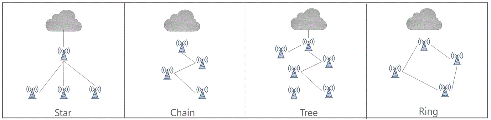
Figure 14. Microwave Topologies
The maximum
number of sites that can be aggregated in a topology depends on the following characteristics:
-
Aggregated traffic on the link: The higher the capacity per eNB, the fewer eNBs can be aggregated.
In addition, depending on the aggregated traffic, the last hop to the transport
network may require the deployment of an aggregation link.
-
Target availability. The higher the availability target, the fewer number of hops that
can be deployed in the microwave topology. One alternative to increase the
availability is to implement the ring topology as it provides path redundancy;
however, the number of microwave links may increase.
The methodologies
to validate the feasibility of different physical topologies are included
within the Tx HLD Module.
Microwave
Transport Summary
The typical values
recommended for the NaaS operator regarding the Microwave Link Deployment
scenario are summarized in Table 6.
|
Characteristic
|
Engineering
Guideline
|
|
Frequency
Band Selection
|
- Unlicensed 5GHz for distances
< 5km
- Licensed 15GHz for distances in the range of 5km-15km
- Licensed 7GHz for distances in the range of 10km-25km
|
|
Microwave
Link Capacity
|
- 50Mbps - 100Mbps per Last-mile
Links
- 100Mbps - 250Mbps per Aggregation Links
*Capacity Safety Margin of 20% of link capacity
|
|
Allowed
Topology
|
- Star, chain and tree
topologies.
*The feasibility of each topology must be validated during HLD Design.
|
Table 6. Engineering Guidelines for
Microwave Link Deployment Scenario
The Architecture
using Satellite as a transport technology is displayed on Figure 15. In this
scenario the eNodeB is connected to a Very Small Aperture Terminal (VSAT)
located in the site, which is connected through a Satellite Link to the
terrestrial Satellite Hub. From this point, a connection to the aggregation
node is reached which in turn, sends the traffic to the Core elements.
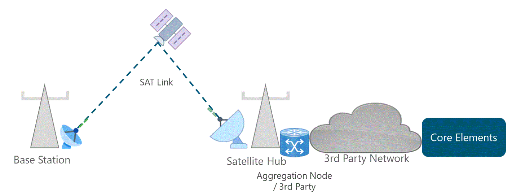
Figure 15. Transport Architecture using
Satellite
The most common
implementation scenario for satellite technology is to use a Satellite Service
provider. The principal considerations when selecting and negotiating with a
Satellite Service Provider are described in the following subsections.
Type of
satellite orbit
Table 7 presents
a comparison among different types of satellite orbits.
|
Orbit
|
GEO
|
MEO
|
LEO
|
|
Distance
|
35,800 km
|
2,000km-35,000km
|
160km-2,000km
|
|
Latency
|
250-500 ms
|
60-250 ms
|
30-50 ms
|
|
Throughput
|
Up
to 500 Mbps
|
Up
to 800 Mbps
|
1Gbps+
*(See NOTE)
|
|
Handover
Periodicity
|
No
HO
|
2-3
hours
|
15-20
min
|
Table 7. Satellite
Orbit Comparison
*NOTE: As LEO
systems have not been launched commercially, the 1Gbps value must be used as a
theoretical reference only.
Despite the
latency constraints, GEO orbits are preferable as they provide larger
footprints and no satellite tracking mechanisms or handover are required.
Additionally, LEO systems have not been launched commercially but may become an
attractive solution when available.
Satellite
Frequency Band
The satellite
frequency band determines the available bandwidth and potential throughput in
the satellite link. Ka-band (~30GHz uplink & ~20GHz downlink) and Ku-band
(~14GHz uplink and ~12GHz downlink) are the most used bands for mobile
transport.
Most Ka-band
satellites offer 10x the throughput available on traditional Ku-band
satellites. The increment of offered throughput also decreases the fee price of
the satellite link. Moreover, Ka-band antennas have higher gain which results
in less expensive VSAT equipment.
On the other
hand, the higher frequency, the more a signal is susceptible to rain fade. That
means that adverse weather conditions impact the Ka-band much more than at
lower frequencies
For the reasons
stated above, Ka-band is preferable to be implemented as the frequency band for
satellite transport technology. However, Ku-band can be the only feasible
option in extreme meteorological territories and in case of lack of Ka-band
coverage.
Satellite
Link Capacity
The Satellite
Link Capacity is the expected transmission rate on a satellite link which must
be defined. This value should be used as reference to negotiate the Service
Level Agreements (SLAs) with the satellite service provided.
Additionally, a
Capacity Safety Margin must be defined to determine the capacity of exhaustion
in a satellite link. For instance, a Safety Margin of 20% indicates that the link
capacity is exhausted when the real utilization hits 80% of the link capacity.
Satellite
Transport Summary
The typical values
defined for the Satellite Link Leasing scenario are summarized in Table 8.
|
Characteristic
|
Engineering
Guideline
|
|
Type
of satellite orbit
|
Preference on GEO Satellites
|
|
Satellite
Band
|
Ka Band is preferred
|
|
Satellite
Link Capacity
|
- 5Mbps - 15Mbps Downlink
- 1Mbps - 5Mbps Uplink
|
Table 8. Engineering Guidelines for
Satellite Link Leasing Scenario
NaaS operator
can select to rely on a 3rd party network when there is a
well-established transport service that can provide the expected transport
services with the corresponding Service Level Agreements (SLA). The complete
process to include a transport service provider is included within the Procurement
Module. This section focuses on the technical aspects to perform the evaluation
of transport service offers.
There are two
possible scenarios to include a 3rd party network:
- For last-mile link implementation. This
particular case only applies when the 3rd party provides the
infrastructure from the RAN site up to the core element.
- For aggregation link implementation. This is the
most common scenario, where the NaaS operator deploys the last-mile link up to a 3rd
party aggregation node. Then, it is the responsibility of the 3rd party to transport this traffic to the
core elements.
From the
technical perspective, Table 9 displays the typical requirements that a
transport service provider must satisfy which must be defined according to
required network service (e.g., last-mile or aggregation link implementation
scenario).
|
|
Evaluated
Characteristics
|
|
Availability
|
Reliability
and uptime
|
|
Time-to-Repair
|
|
Time-to-Deploy
|
|
Capacity
|
Guarantee
Capacity
|
|
Latency
|
Guarantee
Latency
|
|
Security
|
Security
mechanism
|
Table 9. Typical characteristics to be
evaluated in a transport service provider.
The final
decision to include an external transport service provider is also affected by
the financial constraints of the project. By leasing an external network,
considerable investment in infrastructure might be avoided (Capital
Expenditures) and the operation and maintenance activities become
responsibility of the 3rd party, lightening the operational
workload. However, an additional OpEx must be considered along the lifespan of
the network.
Figure 16
displays the specified 3GPP connections between eNodeB and core elements that
are carried over the transport network and the specified protocol stack.
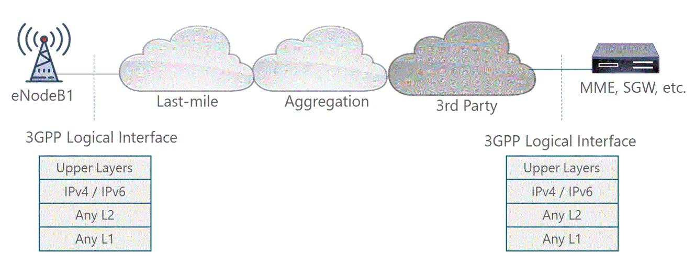
Figure 16. 3GPP Logical Interfaces Protocol
Stack
In order to
support the scenario presented in Figure 16, NaaS operator must define the
different protocols and technologies to be used at different layers. The
following subsections present the available options to be considered along the
different layers considering IPv4 version protocol. Additional special IPv6
version protocol considerations are provided at the end of the section.
Using Ethernet
ports as physical interfaces reduces the need to install or upgrade physical
ports as IEEE standards include data rates for 1Gbps (Gigabit Ethernet), 10Gbps
(10G), 40Gbps (40G) and 100Gbps (100G). For instance, an initial 1Gbps port is
adequate and may support necessary growth in the first years of the network.
In addition,
Ethernet supports both electrical (twisted-pair cable) and optical fiber
interfaces for physical connection.
Finally, the
Ethernet physical port and the Ethernet L2 frame is basically agnostic to the
higher layer protocol (i.e. protocol type field depends on the upper layer
protocol). That means that for instance, IPv4 or IPv6 can be carried.
As the majority
of LTE mobile equipment utilize Ethernet interfaces for transport, Ethernet
based services are most suitable to be implemented in the transport network.
Virtual LANs are
used to separate traffic logically or based on functionalities over the same
Ethernet port (e.g logically separate O&M from the user/control traffic
into a different VLAN). This is achieved by adding a tag (VLANs tag) to each
Ethernet frame so that customer VLANs can be kept separate from provider VLANs.
This tag is used by other Layer 2 devices to switch traffic in the network.
It
must be noted that including a Virtual LAN (VLAN) tag increases the Ethernet
frame header by 2 bytes, which needs to be taken into account when calculating
Maximum Transfer Unit (MTU) at the Ethernet layer.Most base stations support a
flexible way to bind eNB applications (S1/X2 U-plane, S1/X2 C-plane, Mplane,
S-plane) arbitrarily to either: eNB interface address(es) or eNB virtual
(loopback) address(es).
This
flexibility allows base stations to be configured according to the transport
services offered by the transport network, but also applying traffic separation
(e.g. Management-plane from User/Control-plane traffic) as required. eNB
interface IP address(es) can be assigned either to: one or more physical
interface(s); or one or more logical interface(s).
A
physical interface is typically provided by an Ethernet port, whereas a logical
interface is provided by a VLAN termination. Different interfaces as well as
VLANs belong to different IP subnets.
There
are many configurations possible, but for the sake of simplicity only two
exemplary configurations will be shown in Figure 17:
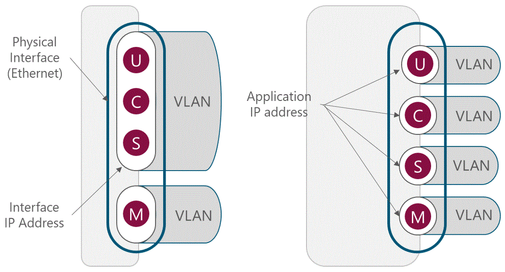
Figure 17. Example IP configurations of
eNB
In the left
example one IP address is used for terminating control, user and
synchronization plane traffic and a second one solely for management plane
traffic. As both IP addresses are running over different logical interfaces
created by two VLANs, the addresses have to belong to different IP subnets. In
the right example separate logical interfaces (VLAN) and IP addresses are used
for each plane (user, control, management and synchronization).
The recommended
configuration is to maintain separate logical interfaces and IP addresses for
each plane. In this case, each plane will be mapped to a unique IP address in
the network. A typical configuration of VLAN tags used to identify the traffic
are presented in Table 10.
|
Plane
|
VLAN
Tag
|
|
Control
Plane (CP)
|
101
|
|
User
Plane (UP)
|
102
|
|
Management
(OAM)
|
103
|
|
Synchronization
(SYN)
|
104
|
Table 10. Typical VLAN configuration
LTE
specifications define an IP based protocol stack for the logical interfaces (S1
and X2). Both versions of IP Protocol (IPv4 and IPv6) are included in 3GPP
standards. Throughout the text IP mentions refers to IPv4, unless specifically
mentioned.
Elements in the
network need the next hop (router or interface) towards a given destination.
This information is learned dynamically with the help of a routing protocol.
However, 3GPP has no guidance of the use of routing protocols. An IP host (e.g.
eNodeB) may have a static pre-configured entry for the default gateway only or
it may run a routing protocol. The following subsections examine different
approaches to implement the network routing mechanism.
Static Routing
The simplest
method is the use of static routes. Their main advantage is that they are
persistent regardless of any perturbation in the network, the state required is
minimal and the absence of a control plane makes the device more scalable.
However, the persistent state does not adapt to changes in the network
topology.
The static route
is recommended to be used on endpoints where a single connection is available.
For instance, in a scenario where only one Cell Site Router is deployed, the
eNode B can only send the traffic to this element. As soon as a second
interface is added, some dynamic means of managing the state of the routing
table on the device is required.
Routing Protocols
A routing
protocol learns routes to destination networks from other routers in the
network. This allows the elements to dynamically adapt to different network
conditions (e.g. link failure) and is more scalable as network grows. One
common classification of routing protocols is based on the role of the protocol
in the network:
- Interior Gateway Protocols (IGP) are used to exchange routing information within
an Autonomous System (AS).
The Open Shortest Path First (OSPF) protocol is
a link-state routing protocol that uses a hierarchical routing model where a
centralized routing domain is defined within an autonomous system. OSPF can be
used in the aggregation segment when more complex topologies are presented.
- Exterior Gateway Protocol
(EGP) are used to exchange
routing information between Autonomous Systems.
The Border Gateway Protocol (BGP) is a distance
vector that is used to advertise the route prefixes outside the organizational
boundary without revealing the internal routing characteristics. BGP is
commonly used to exchange prefixes assigned to mobile subscribers to the providers
Internet peer.
Supporting
protocols
Additional
supplementary protocols included in the IP Stack must be considered during the
implementation such as:
- Internet Control Message Protocol (ICMP): ICMP
is an integral part of the IP Protocol and all routers must support ICMP. With
ICMP, hosts and routers can report errors and exchange diagnostic, control and
status information.
- Address Resolution Protocol (ARP): ARP is a L2
Ethernet broadcast which is asking for the MAC address of the next-hop IP address.
Figure
18, displays a typical implementation for L3 Routing protocols.
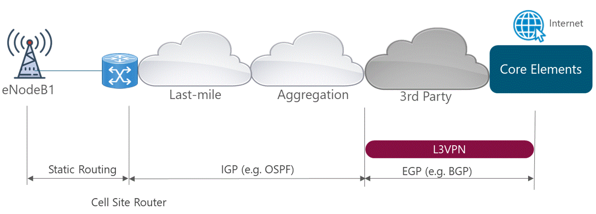
Figure 18. Typical L3 Routing Protocol Implementation
4.3.4
L4 / Transport Layer
The most commonly used transport layer
protocols are examined in the following subsections.
User Datagram Protocol (UDP)
With the mobile
transport application, UDP is the protocol on top of IP in user plane, and
interfacing the radio layer protocols (GTP-U protocol on S1 and X2). UDP makes
no assertion about the reliable delivery of data.
Stream
Control Transmission Protocol (SCTP)
SCTP (Stream
Control Transmission Protocol) provides reliable transport service for messages
over the IP network. In the mobile transport network, it is used for signaling
traffic. LTE signaling, S1 and X2 control plane, is over SCTP.
Transmission Control Protocol (TCP)
In the mobile
transport protocols stacks, TCP is not included, since the user plane is over
UDP/IP, and control plane over SCTP/IP. However, TCP may still be used in the
management plane.
TCP is also used
as a reliable transport mechanism for some of the IP and MPLS control plane
protocols. For example, BGP uses TCP.
The recommended
protocols to be considered within the Reference Architecture are summarized in
Table 11.
|
Description
|
Selected
Protocol
|
|
L1
/ Physical Interfaces
|
Ethernet Interfaces in all
ports:
- 1G for last-mile interfaces.
- 10G for aggregation interfaces.
|
|
L2
/ Data Link Layer
|
- Ethernet
- Support of 802.1q and 802.ad used in VLAN.
|
|
VLAN
Definition
|
Four VLANs, one for each of the
following planes:
- User plane
- Control Plane
- Management Plane
- Synchronization Plane
|
|
L3
/ Routing Layer
|
- Support of IPv4 and IPv6 dual
stack
- Static routing for a single
site in the last-mile.
- OSPF in aggregation network
- BGP for connection to 3rd Party Networks
- Support for complementary protocols (ICMP, ARP)
|
|
L4
/ Transport Layer
|
- UDP
- SCTP
- TCP
|
Table 11. Recommended IP
Protocol Stack in Mobile Operator
Additionally,
the Naas operator can use the Wizard for
Tx & IP Architecture to support them in
the definition of the required protocols to be implemented.
In order to
simplify the IP address management of the overall network, support several
technologies and be able to perform an efficient troubleshooting, an IP Address
Distribution Plan must be defined. An IP Address Distribution Plan is a
document developed by the NaaS Operator that displays how the universe of
available IP addresses will be distributed in a way that supports the required
services. This plan should satisfy the following conditions:
- It should be simple and follow logical rules.
- It should be scalable up to the forecasted
number of eNodeBs and network elements to be deployed in the network
considering an additional margin for future expansions.
- It should allow simple routing configurations
and efficient route summarization.
The following
subsections illustrate the methodology to generate the IP Distribution Plan
using IPv4 version. A similar process can be performed when using IPv6 version
considering that 16 octets are available. More detail on the specifics of this
process can be found on the Primer
on IP Planning Principles.
Network
Range Definition
The first step
to generate the overall IP Distribution Plan is to define the network range to
be used to allocate IP addresses for each element in the NaaS operator network.
The Internet
Assigned Numbers Authority (IANA) has reserved a number of IPv4 network ranges
as private. These network ranges are reserved for organizations that want to
build an internal network and are:
- 10.0.0.0 10.255.255.255 (10.0.0.0/8)
- 172.16.0.0 172.31.255.255 (172.16.0.0/12)
- 192.168.0.0 192.168.255.255 (192.168.0.0/16)
The NaaS
operator can select any of the above IP ranges to be used within their own
network. However, it is highly recommended to use the 10.0.0.0/8, which
allows the greatest flexibility.
IP
Subnetting
Subnetting is
the process used to partition of a network address space into more than smaller
segments (e.g. divide one segment /8 into 16 segments /12). In this way, the
NaaS operator can separate the network space addresses for each type of network
elements (e.g. eNodeBs, transport devices, core elements).
In order to
generate the IP Address Distribution Plan, there exist two primary conditions
to consider: the type of network elements and the geographic distribution. In
this sense, there are two main approaches:
- Location-First: In this approach, contiguous subnets are allocated to
each of operators defined regions, after which the subnet for a given region is
divided among the different types of network elements. In this case, the most
significant bits of the second octet are used to identify the geographical
zone.
- Element-First: In this approach, each type of network element is
allocated with one subnet that is divided among the different regions. In this
case, the most significant bits of the second octet are used to identify the
type of network element.
Because an
efficient route summarization for applications can be done using the
Element-first approach, it is the recommended approach to generate the IP
Distribution Plan supported by the NaaS operator.
Figure 19
displays a typical IP Distribution plan for a mobile operator. The displayed
plan considers four different types of elements and it is assumed that the
operator has divided its network in two geographic zones (North and South).
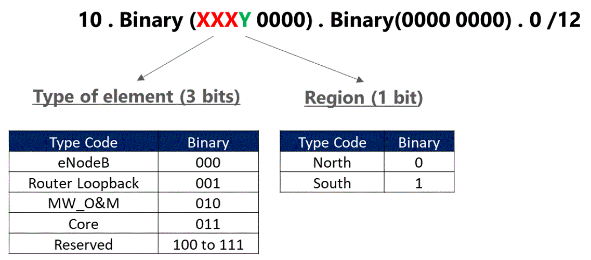
Figure 19. Typical IP Distribution Plan
in Mobile Operator
Using the guideless presented in Figure 19, the IP Distribution in
decimal notation is displayed in Table 12.
|
Type
of element
|
Zone
|
Range
|
|
eNodeB
|
North
|
10.0.0.0/12
|
|
South
|
10.16.0.0/12
|
|
Router
Loopback
|
North
|
10.32.0.0/12
|
|
South
|
10.48.0.0/12
|
|
MW_O&M
|
North
|
10.64.0.0/12
|
|
South
|
10.80.0.0/12
|
|
Core
|
North
|
10.96.0.0/12
|
|
South
|
10.112.0.0/12
|
|
Reserved
|
--
|
10.128.0.0/9
|
Table 12. Typical IP
Distribution Plan in Mobile Operator
Additionally,
Naas operator can use the High
Level IP Distribution Plan Widget as support in the generation of the IP
Distribution Plan.
The subsequent
sections analyze the principal considerations regarding IPv6 protocol.
IP
Addressing in Transport Network
One main driver
in general for IPv6 is the unavailability of public IPv4 addresses. IPv4
addresses are a scarce resource, and several layers of NAT (network address
translation) may be needed, which complicates the network and also introduces
issues for many applications.
However, the IP
addresses used for connectivity within the NaaS operator network do not need to
be public (apart from some interfaces in the mobile core), and thus there is in
general no pressing need for a larger address space. Thus, network elements
within the transport network can use IPv4 addresses.
IPv6
Protocols in Transport Network
Even though both
IPv4 and IPv6 are IP protocols, they are different protocols. IPv4-only devices
are not capable of routing IPv6 packets. In order to support both protocols,
network elements must support dual-stack configuration. The nodes that
implement Dual-stack maintain two protocol stacks (IPv4 and IPv6) which work in
parallel and, therefore, allow the end of the service or router to operate
through any of the protocols.
Furthermore,
separate versions of routing protocols must be maintained for each IP version
(e.g. Open Shortest Path First version 3 (OSPFv3)).
Support
for IPv6 Native Applications
In addition to
the IP layer present in the mobile backhaul, end user applications use IP. The
user IP layer is transparent to the transport network as it is encapsulated
within the radio network layer protocols. User IP layer can be IPv6 even though
the mobile backhaul is using IPv4. In other words, these two layers (end user
IP and transport network layer IP) are isolated.
Figure 20
displays how IPv4 and IPv6 user applications can use the transport network
independently of the implemented IP version. In this scenario, the devices that
are required to support both versions of IP protocol (i.e. dual-stack devices)
are User Equipment, eNodeB and Mobile Core elements.
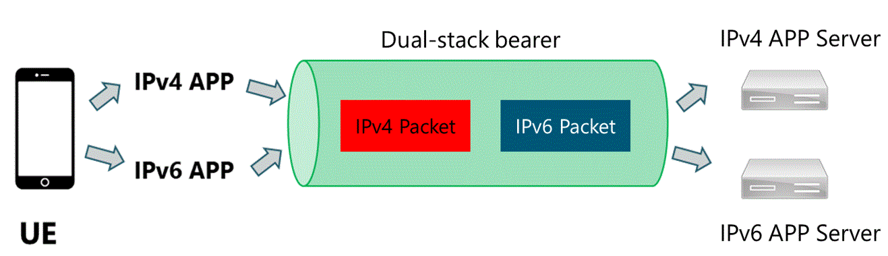
Figure 20. Encapsulated user traffic over
transport network.
In general, it
is recommended to implement dual-stack network elements that can handle both
versions of IP protocol (IPv4 and IPv6) in order to support legacy services and
applications. This will allow the migration to a full IPv6 network.
The present
section includes the examination of diverse redundancy mechanisms, both
physical and logical, as well as fault detection mechanisms to evaluate their
applicability in the transport network.
Microwave
Protection Scheme
The basic
microwave protection scheme is the 1+1, which translates into radio redundancy,
where two radio units create a single radio link. In the case of radio unit
failure, the hot standby radio maintains the service on the site. The reason
for implementing this type of mechanism is because recovery time may be lengthy
in case of radio failure, especially in rural areas. Mean Time to Repair must
consider the travel time to the site with the correct spare parts and the time
it takes a qualified technician to climb and perform the replacement at height.
On the other
hand, the main drawback of this mechanism is that two ratio units must be
deployed for each microwave link which elevates the total CapEx of the
deployment. For this reason, 1+1 protection scheme should only be considered in
critical links (e.g. Microwave links in transport aggregation segment).
Ethernet
Link Aggregation
Link aggregation
supports combining multiple Ethernet links into a group, which is seen as a
single link. The benefits are an increment in capacity as well as resiliency,
as failure of a single link is tolerated. Furthermore, link aggregation also
allows load sharing which is otherwise not supported by Ethernet.
Link aggregation
group (LAG) can be implemented in aggregation segments as a redundancy
mechanism to reach the target availability.
Router
Redundancy Protocols
Router
redundancy protocols (e.g Virtual Router Redundancy Protocol (VRRP) or Hot
Standby Router Protocol (HSRP)) can be considered a form of L3 redundancy. The
operational principle is to allow multiple routers to share a virtual IP and
MAC address. There is one router elected as the master which assumes the role
of forwarding the packets sent to the virtual IP address while the rest of the
routers act as backup. In case the master fails, one of the backups becomes the
master router.
Router
Redundancy Protocols can be implemented in aggregation segments as a redundancy
mechanism to reach the target availability. The specific selection of the
protocol varies according to the selected Tx equipment.
Bidirectional
Forwarding Detection (BFD)
Bidirectional
Forwarding Detection (BFD) is a fault detection protocol that provides a
low-overhead, short-duration method to determine a communication failure
between devices and notify upper-layer applications (also called clients). BFD
is a detection protocol that can be enabled at the interface and routing
protocol levels.
For instance, a
network running OSPF takes several tens of seconds to recover from a failure,
using the default parameter settings. The main component of this delay is the
time required to detect a failure using the timeout-based detection mechanism.
In contrast, BDF typically detects a link failure in 50ms, which leads to a
significantly decrease in network recovery time.
It is
recommended to enable BFD in interfaces and routing protocol levels only on the
elements located in the aggregation segment.
The recommended
mechanisms to be considered within the Reference Architecture are summarized in
Table 13.
|
Description
|
Selected
mechanism
|
|
Redundancy
mechanisms
|
Microwave Protection Scheme 1+1
in aggregation links
|
|
Ethernet Link Aggregation in
aggregation links
|
|
Router Redundancy Protocols in
aggregation nodes
|
|
Fault
detection mechanisms
|
Bidirectional Forwarding
Detection in aggregation nodes
|
Table 13. Engineering Guidelines for Redundancy and Fault
Detection Mechanisms Selection
Additionally,
the Naas operator can use the the Wizard for
Tx & IP Architecture to support in the definition of the required
mechanisms to be implemented.
In this section,
a methodology to establish the general rules for the mapping between RAN QCIs
and L3 QoS markings is presented. Additionally, different packet scheduling
mechanisms are examined to determine their implementation suitability.
As stated in
Section 3.3, the NaaS operator controls the Quality of Service by defining QCIs
according to the characteristics of the service. In the transport network, a
mapping among QCIs to DSCP bits and between DSCP bits and L2 p-bits are
performed as illustrated in Figure 21. It should be noted that the ability to
map QoS codes between layers is essential to ensure interoperability and
providing end-to-end QoS.
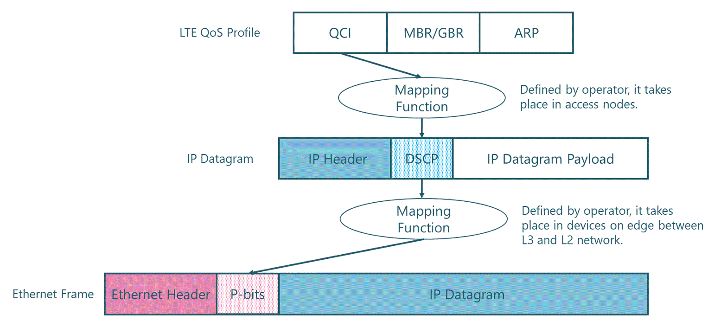
Figure 21. Mapping Function of QoS values
among different network layers.
Per-hop behavior (PHB) is an important concept to define the
forwarding behavior applied to the different traffic types. A node performs the
same PHB for packets with the same DSCP value. The NaaS operator implementation
can use the following PHB types:
-
Expedited Forwarding (EF): EF traffic has the
highest priority above all other traffic classes. The EF PHB applies to
services that require a short delay, low jitter, and low packet loss rate, such
as voice and signaling traffic.
-
Assured Forwarding (AF): Assured forwarding
allows to provide assurance of delivery as long as the traffic does not exceed
some subscribed rate. Traffic that exceeds the subscription rate faces a higher
probability of being dropped if congestion occurs.
-
Best-effort (BE): The BE PHB focuses only on
whether packets can reach the destination, regardless of the transmission
performance.
The recommended
mapping function among QoS codes of different layers is presented in Table 14.
The table includes the per-hop behavior value which determines the treatment
for each type of traffic.
|
Type
of Traffic
|
QCI
|
p-Bit
|
DSCP
|
PHB
|
|
Data
|
9
|
0
|
0
|
BE
|
|
Voice
|
1
|
5
|
46
|
EF
|
|
eNB-Control
|
X
|
4
|
34
|
AF41
|
|
eNB
Synchronism
|
X
|
5
|
46
|
EF
|
|
Management
|
X
|
3
|
26
|
AF31
|
Table 14. Recommended mapping function among QoS codes
Packet
scheduling mechanisms allow the congestion management within the transport
network and must be implemented in any interface that can experiment
congestion. Every time packets enter into devices faster than they can exit,
there is a possibility of congestion. When congestion occurs, packets should be
temporarily stored or queued in temporary storage for subsequent scheduling as
shown in Figure 22.
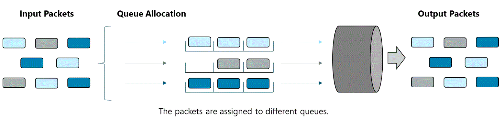
Figure 22. Packet scheduling into
different queues.
The commonly
used types of queues are: Priority queuing (PQ) that are served in strict
priority order and Weighted fair queuing (WFQ) that divides the interface
bandwidth among the different flows according to their priority, ensuring a
fair bandwidth distribution for all applications.
However,
buffering memory is a limited resource on any interface. By queuing, buffers
fill up, and packets can be discarded as they arrive, known as "Tail
Drop"; or selectively dropped before all buffers are filled, known as weighted
random early detection (WRED).
The recommended
configuration for Congestion Management in the transport network for different
types of traffic is presented in Table 15.
|
PHB
|
Assign
Queue
|
Packet
drop mechanism
|
|
EF
|
Priority
queuing (PQ)
|
Tail
drop
|
|
AF4
|
WFQ
|
WRED
|
|
AF3
|
WFQ
|
WRED
|
|
AF2
|
WFQ
|
WRED
|
|
AF1
|
WFQ
|
WRED
|
|
BE
|
Default
Queue
|
RED
|
Table 15. Recommended configuration for
Congestion Management.
Additionally,
the Naas operator can use the QoS
Mapping and Scheduling Mechanisms Template to support in the definition of
the required mechanisms to be implemented.
This section
provides guidance on the additional design considerations must be considered in
order to support the overall Transport & IP Network solution.
Synchronization
is fundamental in the LTE network operation as a failure in synchronization can
result in spectral inefficiency and service degradation. The types of synchronization
methods of interest for a mobile network are phase/time synchronization and
frequency synchronization.
In FDD-LTE
networks without special radio features may be deployed with
frequency-only synchronization. In this case the synchronization signal
is needed only for keeping the carrier frequency within required limits.
On the other
hand, TDD-LTE and certain advanced LTE features (e.g. coordinated
multi-point (CoMP)), require that all eNBs are phase synchronized in the
sense that they must start radio frame transmission at exactly the same
instant.
Global
Navigation Satellite System (GNSS)
In satellite
navigation systems (e.g. GPS and GLONASS), a GNSS receiver derives frequency
and calculates time from the satellite signals, and the synchronization
equipment then uses it as a reference for network timing.
The GNSS
receiver can be a standalone device or embedded into the base station. A GNSS
receiver can also be integrated into a collocated or nearby cell site router
(CSR)
The
implementation of a GNSS requires that the location of the GNSS receiver should
allow an unobstructed view of the satellites of the used GNSS. Furthermore, the
cost to deploy a GNSS receiver in each node may impact the overall CapEx
deployment. For this reason, this synchronization mechanism can be considered
when a satellite link is used as transport technology.
Precision
Time Protocol (PTP)
The IEEE 1588
Precision Time Protocol (PTP) was developed in response to enable accurate
distribution of time and frequency over packet-based networks. PTP requires the
implementation of a server (PTP Grandmaster Clock) as the primary reference
source for all of the PTP clients.
For the sites which do not have any GPS
receiver, it is recommended to adopt PTP as clock synchronization protocol. The
reason being it is standardized protocol, accurate and allows lower cost and the clock signal will be transmitted
transparently through the transport network.
Synchronization
Summary
The selection of
synchronization mechanisms represents a trade-off among cost and complexity.
For instance, for a small network deployment it may be easier to implement a
GNSS receiver in all base stations and avoid the PTP infrastructure and
configuration.
The default recommended
synchronization mechanisms to be implemented in the transport network are
presented in Table 16.
|
Description
|
Selected
mechanism
|
|
Synchronization
mechanisms
|
Global Navigation Satellite
System (GNSS) preferred when satellite transport and unlicensed backhaul is
used
|
|
Precision Time Protocol (PTP)
for terrestrial transport
|
Table 16. Recommended synchronization mechanisms in the
transport network
The maximum
transmission unit (MTU) is the largest size packet that can be processed by
nodes within the transport network. When a packet to be transported exceeds the
MTU size of the egress interface, the packet needs to be fragmented in order to
be sent forward. However, when MTU configuration does not match on the
intermediate nodes, packets can be dropped generating a service degradation.
Because the
connectivity between the eNodeB and the core elements uses GTP-U
tunneling, the packets grow when transported over the transport network.
Moreover, additional mechanisms required to provide the LTE service (e.g. VLAN
tagging, IPSec) also increase the total packet size and fragmentation cannot be
completely avoided. Thus, matching the path MTU with the IP packet size
considering the additional headers (e.g. GTP, VLAN, IPSec headers) can reduce
the possibility of fragmentation.
In Ethernet
networks, the default value of MTU is 1500 bytes. In some cases, by using
protocols that increase the frame header (e.g. VLAN, IPSec), mini-jumbo (3000
bytes) or jumbo frames (9000 bytes) may be required to prevent fragmentation.
It is
recommended that NaaS operator determine the MTU to be used along the transport
network considering all the additional headers resulting from architectural
decisions. Furthermore, when the traffic traverses a 3rd party
network, it is important to verify that the defined MTU value is set across
every link in the external network to avoid traffic being dropped.
4.6.3
Security
This section
presents the evaluation of different transport network security options to
determine guidelines to select the most suitable implementation.
Network
Element Security
One of the
foundations for a secure network is to implement security at the network
element level. This requirement applies to any node connected to the network.
Network element
security covers multiple aspects of the node functionality, some of them need
to be considered by the manufacturer at the early design and implementation
phase, while others need to be considered by the NaaS operator during the
deployment and maintenance phases.
The following
list includes the most relevant actions that should be performed as part of the
deployment and maintenance of the network element:
- Support of user authentication and controlled
access levels.
- Support secure access by the management system
user (e.g Secure Shell (SSH), Simple Network Management Protocol (SNMPv3))
- Unnecessary physical interfaces are disabled.
- Unnecessary services and ports are disabled.
- Support of CPU Overload Control.
- Default passwords are changed.
- Passwords are regularly changed and only strong
passwords are used.
Additional
actions might be recommended by the transport equipment OEM.
IPSec
Framework
IPSec is not a
single protocol, but a collection of protocols and services that provide
security for IP networks, including security protocols such as Authentication
Header (AH) and Encapsulating Security Payload (ESP), Internet Key Exchange
(IKE), and certain algorithms used for authentication and encryption.
IPSec provides
secure services for IP packets mainly through encryption and authentication:
User data encryption, Data integrity authentication, Data origin authentication
and Anti-replay.
To achieve these
services, the functionality of a Security Gateway (SEG) is required. This
entity could be a dedicated network element or be included in other elements
depending on the specific implementation. The typical deployment considers the
SEG in front of the Evolved Packet Core (EPC). Figure 23 displays the
architecture of the transport network implementing a dedicated SEG.
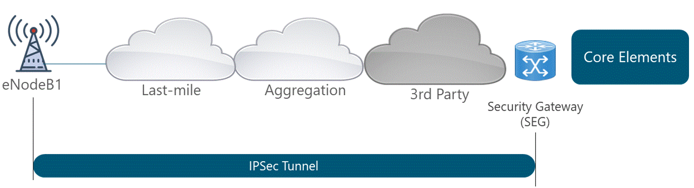
Figure 23. Transport architecture
implementing IPSec framework
IPSec framework
can be implemented in the following scenarios:
-
IPsec for protecting the
LTE control traffic (S1-C, X2-C)
This scenario should be
considered by NaaS operators with self-built
transport networks or with eNBs in areas secure enough to just encrypt the
signaling traffic.
-
Full IPsec protection
(control and user traffics)
This scenario should be considered when the
transport services are leased from a 3rd Party or when traffic
traverses by untrusted networks.
The main drawback of this scenario is that the
impact of IPsec is significant on the U-plane, as an additional overhead
will be introduced. The additional overhead due to IPsec is about 14%.
Furthermore, IPSec requires the implementation of more powerful hardware that
is capable of encrypting and decrypting the traffic in real-time. This
characteristic can increase the cost of network equipment.
Security
of Management and Synchronization Plane
A secure
mechanism to protect the Management plane (i.e. OAM traffic) must be available
even if the transport network scenario is considered trusted by the NaaS
operator. The Management plan can be protected by transport layer security /TLS
mechanisms.
On the
synchronization plane side, the following recommendations must be considered:
- Handling the synchronization traffic in a
separate and dedicated VLAN. If this option is not
supported by the Tx equipment, this traffic can be
transported together with the control flows.
- In case synchronization is provided with PTP
technologies, some 1588v2 inbuilt security mechanisms can be used.
- It is not recommended to transport the PTP
packets in an IPsec tunnel, as this has some impact on the delay variation
The recommended
security mechanisms to be implemented in the transport network are presented in
Table 17.
|
Description
|
Selected
mechanism
|
|
Network
Element Security
|
Mandatory Network Element
Security Mechanisms in all nodes in the network.
|
|
User
and Control Plane Security
|
Full IPsec protection when an
untrusted 3rd party is used.
|
|
Management
Plane Security
|
TLS protocol required for
management plane
|
|
Synchronization
Plane Security
|
PTP inbuilt security mechanisms
with no encryption for synchronization plane messages
|
Table 17. Recommended security mechanisms
in the transport network
Methodology to generate a final report that
consolidates the outputs from this module:
-
Transport & IP Network
Reference Architecture.
-
Transport & IP Network
Requirements Specification.
The corresponding Templates are included as part of the Methods of Engagement.
The main
deliverable is the Reference Architecture which contains the overall technical
solution, engineering guidelines, technologies and concepts required to
implement the Tx Transport network. The Reference Architecture shall contain
the following aspects:
-
Overview: High-level description that summarizes the Tx
Network Architecture.
-
Transport Technologies
Selection: A description of the
selected transport technologies to be considered as well as engineering
guidelines to be used during Design phases.
-
IP Networking Design: A view on the protocols stack to be implemented
in the different segments of the transport network.
-
Redundancy and Fault
Detection Mechanisms: Description
of the set of the Redundancy and Fault Detection mechanisms to be considered in
the network implementation.
-
QoS Mapping and
Scheduling Mechanisms:
Description of the set of QoS Mapping and Scheduling Mechanisms mechanisms to
be considered in the network implementation
-
Additional Architectural
Considerations: A view on the
additional architectural considerations (e.g. security and synchronization) to
be considered in the network implementation.
Generation of
the Reference Architecture following the format and structure established. NaaS
Operator can use the Transport
& IP Reference Architecture Template as
a reference to create their own version.